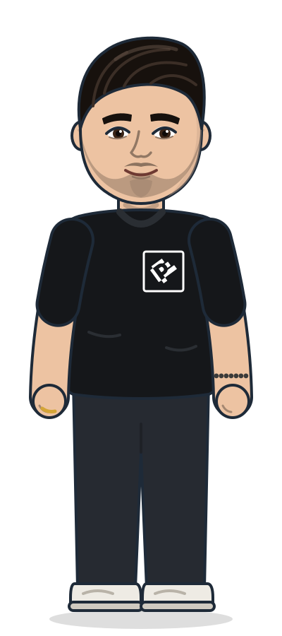
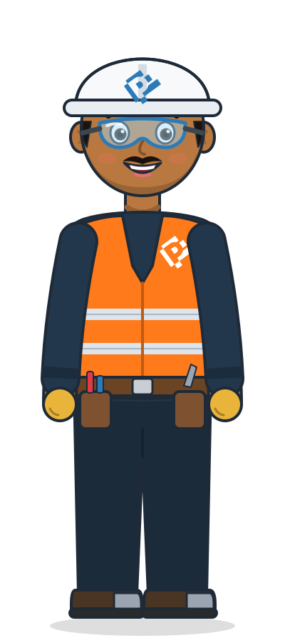
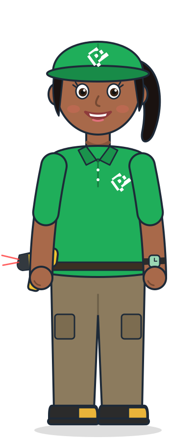
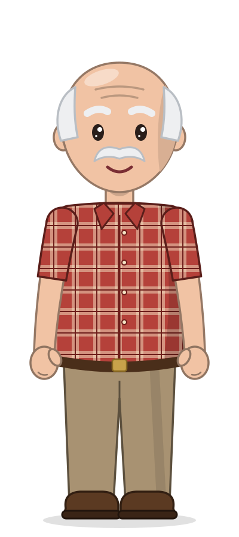

Vinícius
Apresentador geral
Baseado no próprio Vinícius: cabelo escuro cacheado e volumoso no topo, laterais curtas, barba rala, sobrancelhas grossas, porte forte, camiseta preta justa com o selo da Protemaxxi no peito, calça preta, tênis claro robusto, pulseira de contas e aliança.
Voz: masculino, 25-30 anos. Dono e cara da Protemaxxi. Abre e fecha os vídeos, chama os outros personagens e fala direto com o cliente, com confiança e sem enrolação.
“Fala, pessoal! Eu sou o Vinícius, da Protemaxxi. Hoje a gente vai te mostrar como proteger o que é seu, do jeito certo.”

Marcão
Instalador
Uniforme azul-marinho de manga longa, colete laranja refletivo com a logo, capacete branco com a logo, óculos de proteção, luvas, cinto de ferramentas e botina com biqueira.
Voz: masculino, 40-45 anos. Experiente, prático e tranquilo. Explica o passo a passo da instalação sem enrolar e sempre lembra da segurança.
“Fala, pessoal! Antes de subir na escada, capacete, luva e óculos. Segurança primeiro, depois a câmera.”
Rodrigo
Vendedor
Camisa social azul-clara com a logo no bolso, gravata azul-marinho, calça social, sapato, relógio dourado e óculos de armação fina.
Voz: masculino, 30-35 anos. Carismático, sorridente e consultivo. Entende o problema do cliente antes de oferecer o produto.
“Olá! Me conta o que você quer proteger, que eu te mostro o kit certo, sem gastar à toa.”

Luana
Estoquista
Camisa polo verde com a logo, boné verde da empresa, rabo de cavalo, calça cargo, botina e leitor de código de barras na mão.
Voz: feminino, 24-28 anos. Organizada, ágil e bem-humorada. Sabe onde está cada peça e garante que o pedido sai completo.
“Pedido conferido, bipado e embalado! Fonte, conector, cabo e câmera: tá tudo aqui.”
Caio
Suporte técnico
Jeito nerd: óculos redondos grandes, headset com microfone, smartwatch, cabelo bagunçado, camiseta preta da Protemaxxi, jeans e tênis.
Voz: masculino, 25-28 anos. Didático, curioso e paciente. Adora tecnologia e transforma configuração difícil em passo simples.
“Beleza, vamos lá: abre o aplicativo, toca no mais e aponta a câmera do celular pro QR Code do gravador.”

Seu Antônio
Cliente (comerciante)
Senhor de uns 65 anos, careca com cabelo branco nas laterais, bigode branco, camisa xadrez de manga curta, barriguinha, calça cáqui com cinto.
Voz: masculino, 60-68 anos. Dono de comércio de bairro, desconfiado com tecnologia mas preocupado com a segurança da loja. Faz as perguntas que todo cliente faz.
“Ô, meu filho, mas essa câmera aí grava à noite também? Porque o problema lá na padaria é de madrugada.”
Fernanda
Cliente (moradora e empreendedora)
Mulher de uns 35 anos, cabelo crespo volumoso, brincos de argola dourados, blusa amarela, saia midi verde-água, tênis e celular na mão.
Voz: feminino, 32-38 anos. Conectada, decidida e prática. Quer ver tudo pelo celular e entender o custo-benefício.
“Eu consigo ver a câmera da minha casa e da minha loja no mesmo aplicativo? E se a internet cair?”